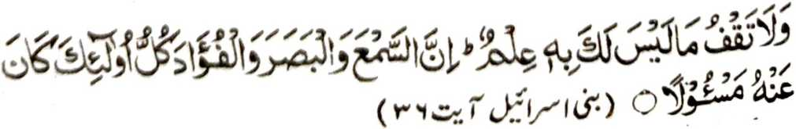
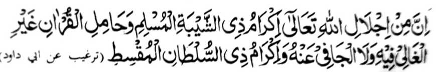
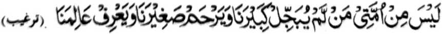
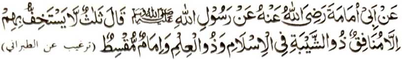
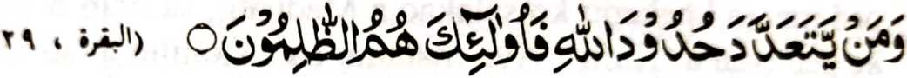

Si-i sangka-iya pinto, na kabaya aken a aden a mipalad aken ko kalangowan o Muslim ka o ba kalo-kalo na katokawan niran so okit a kaphagadati ko manga Olama ago so gi-i mamanolon ko Islam. Imanto na kalalayaman a aden a da-a kaphapasodan niyan a rata a ginawa ago kagowad iran ko gi-i mamanolon ago so aden a manga sabot iyan a manga tao sangka-iya a Ummat; Tantowa-i a phakakaid si-i sa kailay o Agama. Si-i ko omani sagorompong ago omani paganadan sangka-iya a donya, na aden a matatago-on a manga pipiya ago manga rarata-i ongar a manga tao; na o aden a da mapira katao a marata-i ongar a ped ko manga Olama na kena ba piyakamemesa. Dowa timan a thanodan si-i. Paganay ron na, di khapakay o ba ngka phagaranganen (sa marata) so parangay o tao, taman sa da-a mabager a karina-on.
Pitharo o Allah sa Qur’an:

"Go di ngka pethindegi so da-a kata-o ngka on. Mata-an a so kaneg, go so kaday, go so poso, na omani isa kiran na khaiza-an.” [Surah Bani Israel 36]
Marayag a tanto a di kaontol o taplisa ngka so (mapiya a) pando-an o sakatao a gi-i manolon, sabap bo sa aden a kazasangkaon o ginawa ngka a da a amadan niyan.
So manga Yahodi na initogalin niran so Manga Kitab iran sa basa Arab, go lalayon a kapembatiya-a iran non ko manga Muslim; ogaid na so Nabi (Sallallaho ‘Alaihi Wasallam) na masanggila o ba aden a ipangona-kona niyan a lalag pantag sangkanan sa miyatharo iyan, “Hay manga Muslim! Di niyo thangkeda so kabebenar o gi-i ran tharo-on na di niyo peman thaplisa. Ba niyo den tharo-a, ‘Saden sa initoron o Allah na paparatiyaya-an nami.’” Aya ma-ana niyan, na inisapar iyan so kasopaka ko apiya so tothol o da pamaratiyaya a di kao-ontamadan. Ogaid na miyasorang angka-iya a tapaos, sa pethaplisen tano so manga pando-an o gi-i mamanolon a miyasopak iyan so manga kabaya tano a ginawa, a da den a khida-owa tano ron, sa gi-i tano siran phapakaito-on apiya katawan tano a siran na phipiya-piya.
Isa pen a thakiken niyo sa pamikiran niyo na so manga Phipiya-piya a manga Olama ago Gi-i Mamanolon ko inged iyo na manga manosiya siran mambo, sa misabap ro-o na aden mambo a pa-awing iran. So onga o Amaal iran a mapiya go marata na si-i kiran bo pethagorar go so samporna a kapagitong na rek o Allah; ogaid na phangenin aken a sabap ko Kapedi Iyan ago so kala Iyan i gagao, na rila-an Niyan siran langon sabap sa aya den a pinggalebek iran na so kiphagawiden niran a akal ko Agama Niyan ago so
Paratiyaya a piromasayan niran ko tenday o kaoya-goyag iran. Aya kakampet iyan, melagid o giyabo a kapethago-i sa sangka-an so atay ago kagowad ko siran a gi-i mamanolon, o di na pakalangkapen (so pa-awing iran) ko manga ped a tao, na kha-awat iyan so tao ko Agama ago aya khasabapan sa mala a kamboko a bagi-an o siran a miyangeped sangka-iya ola-ola.
So Nabi (Sallallaho ‘Aiaihi Wasallam) na miyatharo iyan:

“Mala-an a ped ko pemamasela-an [sa kailay] o Allah na so kapagadali ko minitolod a omor iyan a Muslim, go so ipephangenda-o niyan ago gi-i niyan ipanolon so Qur'an a da niyan panongkiri, go so datu a maontol." [Targhib]
Sakamaoto mambo a giyangka-iya pagalowin a manga katharo o Nabi (Sallallaho ‘Aiaihi Wasallam) na si-i niyan reketano pitharo:

"Di ped ko Ummat aken so tao a di niyan phagadatan so manga loto-a rekami go di niyan iphangalimo so manga kangodaran rekami, go di niyan phagadatan so manga Olama ami. ” [Targhib]

Miyaka thitayan ko Abi Umamah (Radhiallaho ‘Anho) a pitharo o Rasulollah (Sallallaho 'Alaihi Wasallam), “Telo a da a phakarao phapakaito kiran a telo inonta so Munafig: so minitolod a omor iyan a Muslim, so manga Olama, ago so Maontol a Datu.” [Targhib]
So Nabi (Sallallaho ‘Alaihi Wasallam) na miyatharo iyan pen, “Telo a ipekhalek aken a karibatan o manga Ummat aken: Paganay ron, na sabap ko kaphakala o kalbihan ago kasibi-sibiyan sa donya, na pezisi-iga siran; ika dowa, so gi-i kapagosaya ko Qur’an na tanto a pendakel sa apiya so da-a sabot iran na tharima-an niran a katawan niran so manga ma-ana o Qur’an, minsan pen kadakelan ko ma-ana niyan na da a zaboton inonta so siran a manga Olama sangkanan a Kitab, a siran so gi-i tharo sa, ‘Tarotop so paratiyaya mi rekaniyan [a Qur’an], a giyangkanan na pho-on ko Allah’, sa anda taman-i kapakaphananggila o siran a kalilid a tao; ika telo, na so manga Olama na thaplisen siran ago di siran phagadatan phiya-piya.” [Targhib]
Madakel a lagida-i a manga Hadith a miyato-on ko manga kitab a Hadith. Miya-aloy ko “Fatwa Alamgiri” a so manga rarata a katharo a itatakay ko manga Olama ko Islam o manga tao a da a sabot iran sa imanto a masa na khabinasa-an niyan so paratiyaya iran. Giyoto-i sabap a so manga tao na pananggila-i ran angka-iya manga katharo. Ibetad ta pasin sa da den a titho ago ikhlas a manga ‘Olama ko Islam sangka-iya donya (sa aya ndakel na so manga baradosa a manga tao), na apiya maoto den na da den a khakowa-on a mapiya sa kapethakay kiran sa manga rarata a Olama. Aya mata-an na atas tanggongan o omani Muslim a kapaka-mbaal iran sa satiman a ompongan ko Islam a khasabapan sa kambowatan a manga tao a penggalebek ko Islam sa Ikhlas. Aya bo a kapakasarig tano na amay ka makatindeg so lagidanan a ompongan.
Benar a aden a lalayon di kambida-bidaan o manga pana-awil o manga Olama pantag ko malobay a kepit, sa kena ba kiran noto patot a iphapakaito. Aden a Hadith a pitharo iyan, “So Nabi (Sallallaho ‘Alaihi Wasallam) na inibegay niyan so mbala a talompa iyan ko Abu Hurairah (Radhiallaho ‘Anho) na miyatharo iyan non, Awidi ngka angka-iya a mbala a talompa aken a tanda, sa pakalangkapa ngka ko manga Muslim a saden sa tharo-on niyan so Laa Ilaaha Illallah, Muhammadur Rasulollah’ ko piyaganakan-akan o poso iyan, na phakasoled sekaniyan ko Sorga.” So Hazrat Umar (Radhiallaho ‘Anho) na miyabalak iyan so Abu Hurairah (Radhiallaho ‘Anho) sangkoto a lalan na iniza-an niyan o anda zong. Pitharo iyan non so katharo o Nabi (Sallallaho ‘Alaihi Wasallam), na kiyararangitan so Umar (Radhiallaho ‘Anho), sabap sa da ro-o maka-ayon sangkoto a pamikiran, giyoto-i sabap a miyatephi iyan a rareb o sosogo-on, na miyaothang sekaniyan. Ogaid na da a miyararangit ko Umar (Radhiallaho ‘Anho), go da a mizabek rekaniyan sabap sangkoto a kiyapaka-mbida o pamikiran. Madakel a kiyazosopaka-an o manga Sahabah a pamikiran na si-i ko oriyan niran na so peman so pat a Imaam o manga Fuqahah a miyakazosopaka mambo siran ko manga i-ito a osayan.
Madakel a kiyazosopaka-an o pat a Imaam pantag ko Sambayang; saken a manga dowa gatos a katawan ko ron, ogaid na kena ba aya ma-ana ini na so phagonot kiran na ba siran makazangka ko paratiyaya o ped iran (a khekepit ko salakao a Madhab), sa italo o isa ko ped iyan a ‘Kafir’. Aya mata-an na so kalilid a tao na di ran katawan so manga i-ito a nganin a di phagayonan a panarima o manga Olama. Giyangka-iya a kiyazosopaka-an na limo a di katawan. Aya mata-an na so siran a manga pipiya a gi-i manolon ago magi-Ikhlas a oripen o Islam na di ran thago-an sa kipantag so manga i-ito a nganin [a di phagayonan], ka aya awid iran a akal na anda manaya-i katoro o manga tao ko Lalan a Ontol. Katawan tano a so manga doctor a mbida-bida siran sa pamikiran (ko melagid a sakit) sakamaoto mambo so manga abogado a mbida-bida siran sa pando-an, ogaid na so manga tao na da iron noto baloya a balamban sa itataros iran den so kapezong iran ko manga doctor ago so manga abogado. Ogaid na so peman so manga tao a da a sabot iran, go maliget a begatan, na biyaloy ran so kiyapaka-mbida-bida sa pamikiran a sabap a kapezopaka iran ko manga Olama. Naino ka minipaliyogat ko omani Muslim so kapamamakinega iran ko manga Olama ko Qur’an, a patot a kapagadati ran non ago patot so kakenala iran non a siran [a manga Olama] na aya titho a phagokit ko Sunnah, go paliyogaton a kapananggila-’ niyan o ba aden a nggalebeken niyan a isopak iyan ko manga Olama. So mambo so manga Olama ko Islam na paliyogat kiran a katatanodi ran sangka-iya katharo o Nabi (Sallallaho ‘Alaihi Wasallam) ago so kinggolalanen niran non; “Ilang a kata-o so kimbitiyara-in ko manga tao a di kiran mapapatot.”
Sangka-iya a marzik a masa, a apiya so manga Sogo-an o Allah go so manga katharo o Nabi (Sallallaho Alaihi Wasallam) na di pen gi-i phapa-awingen. na di aken iphamemesa opama ka so osiyat o manga Olama na di phamamakinegen go so Qur’an na di pagonotan. Pitharo o Allah sa Qur’an:

"...Sa tao a lawanan niyan so manga tamana o Allah na siran man so manga darowaka.” [Surah Al-Baqarah:229]